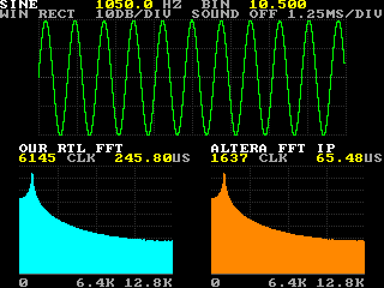
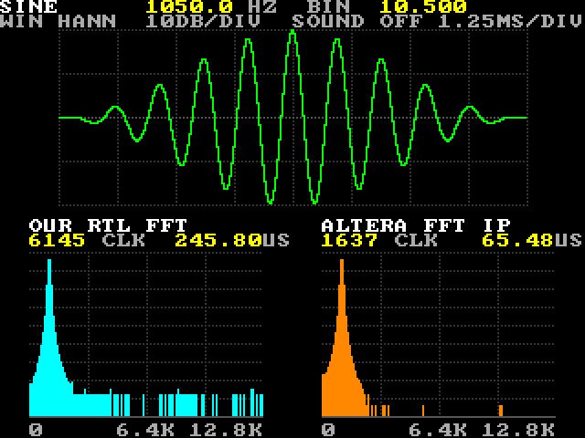
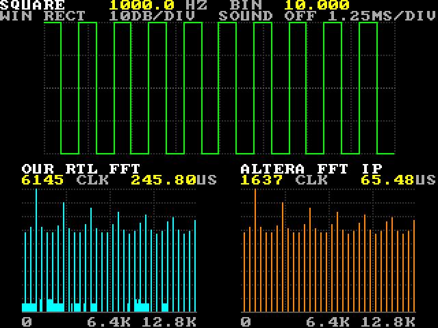
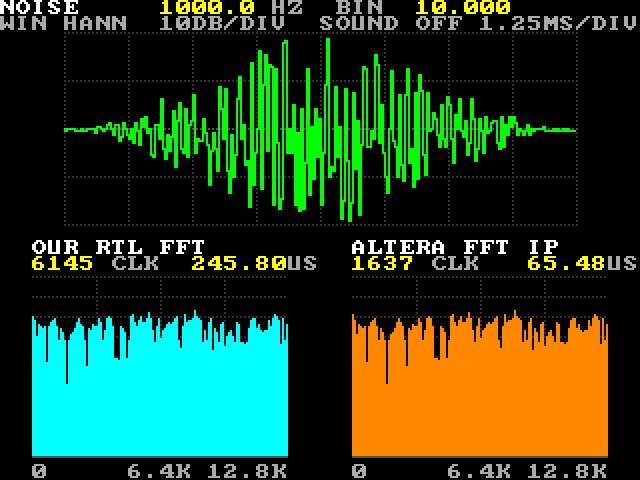

FFT Lab
A small signal lab on one screen. A wave generator makes six shapes at a frequency you set with the shield's wheel; the top half of the screen is a scope, the bottom half shows the spectrum twice: our own 256-point FFT on the left, Altera's FFT IP on the right. Both get the same samples in the same clocks, and each shows how long it took: 6,145 clocks for ours, 1,637 for the IP. Every pixel was checked against a bit-exact Python model, in simulation and on the board.
No bitstream in the repo (a .sof is 3 MB per project): restore the .qar or use the sources here,
one build makes it in about 4 minutes. The Altera FFT IP runs in evaluation mode in Quartus Lite (free, no license):
the build writes only a time-limited fft_lab_time_limited.sof, which keeps running while the programmer stays
connected (without it, one hour by Intel's guide; we saw 32 minutes and stopped watching), and no .pof, so this
design cannot be flashed. The user guide has every command.
Resources
The last build: MAX 10 10M50DAF484C7G, Quartus Prime 17.1.0 Lite, 00:03:03 to build. Made by python scripts/de10.py report projects/fft_lab --html.
| Resource | Used | Of the device | What uses it |
|---|---|---|---|
| Logic elements (area) | 7,183 | 49,760 (14 %) | core/eng/ip (fft256) 1,734; core/draw (lab_draw) 1,098; debug (debug_link) 515; core/dig (lab_digits) 448; core/ctrl (lab_ctrl) 429 |
| Registers | 3,929 | - | core/eng/ip (fft256) 1,425; pad (gamepad) 324; core/dig (lab_digits) 276 |
| Memory bits | 1,035,592 | 1,677,312 (62 %) | debug (debug_link) 921,600; core/eng/gen (wave_gen) 36,864; core/eng/mrom (mag_rom) 28,672; screens (Screens_dispaly) 16,384 |
| M9K memory blocks (9 kbit each) | 137 | 182 (75 %) | debug (debug_link) 114; core/eng/gen (wave_gen) 5; core/eng/mrom (mag_rom) 4; core/eng/ip (fft256) 3 |
| Multipliers (9-bit elements) | 26 | 288 (9 %) | core/eng/ip (fft256) 8; core/eng/diy (fft_r2) 8; mag_px ×2 8; core/eng/gen (wave_gen) 2 |
| PLLs | 2 | 4 (50 %) | pad/adc_pll clk[0] 10.0 MHz; pll clk[0] 25.0 MHz; pll clk[1] 50.0 MHz; pll clk[2] 100.0 MHz |
| Pins | 101 | 360 (28 %) | |
| ADC blocks | 1 | 2 (50 %) | |
| JTAG hub (USB link) | 1 | 1 (100 %) |
| Clock | Runs at | Fmax (slow model, 85 °C) | Setup slack |
|---|---|---|---|
| altera_reserved_tck | 10.0 MHz | 116.09 MHz | 45.693 ns |
| clk50 | 50.0 MHz | - | - |
| pad/adc_pll clk[0] | 10.0 MHz | - | - |
| pll clk[0] | 25.0 MHz | 38.34 MHz | 13.919 ns |
| pll clk[1] | 50.0 MHz | 137.38 MHz | 12.721 ns |
| pll clk[2] | 100.0 MHz | 343.88 MHz | 2.850 ns |
Timing: met, worst slack +0.101 ns (all corners, setup, hold, recovery, removal).
In plain words: everything the lab does runs on one clock, pll clk[0] at 25 MHz (the pixel clock): the generator,
both FFTs, the bars, the screen and the USB link. It could run at 38 MHz. The game pad and its debouncer run at 50 MHz,
the LCD's driver at 100 MHz, the ADC on its own 10 MHz PLL, and altera_reserved_tck is the USB-Blaster's JTAG
clock. Every setup slack is 2.85 ns or more; the worst slack of all, +0.101 ns, comes from the other checks (hold,
recovery, removal), and it is met. The biggest block is Altera's FFT IP: 1,734 logic elements and 1,425 registers, against
398 and 189 for ours (fft_r2). The frame buffer in debug_link (114 M9K blocks, 921,600 bits) is there
only so the PC can read the screen back for the tests; without it the lab needs 23 M9K blocks and 113,992 bits.
Contents
- Resources
- What you will see
- Block diagram
- How it flows
- Numbers
- How it was tested
- Review log
- Status and what is next
- Files
What you will see

S0 N84 W0): 10.5 cycles in 256 samples falls between two bins, so the energy leaks into a
skirt. Both panels agree. Ours took 6,145 clocks (245.80 µs), the IP 1,637 (65.48 µs).
W1): the burst tapers to zero at both ends and the peak gets narrow. Ours leaves
low rounding bars across the floor (16 bits, halved every stage); the IP's block floating point leaves it almost empty.
S1 N80), exactly 10 cycles: the energy is on every fourth bin only (2, 6, 10, 14 ...): the odd harmonics
of bin 10 and the higher ones folded back.
S5) with the window: a flat, ragged spectrum on both sides, new every frame.All four pictures were read back from the board over USB (scripts/de10.py screen). Turn the wheel and the
frequency follows, in steps of 12.5 Hz up to 12,787.5 Hz, on the screen and on the 7-segment display. Left and Right pick
the shape (sine, square, triangle, saw, spikes, noise), A turns the Hann window on and off, B switches the bars between
dB and linear, Start freezes the frame, Select plays the frequency on the buzzer, and KEY0 goes back to a 1 kHz sine.
The top lines of the screen say what is set; under each spectrum is how long it took. The same settings can be sent as
letters over USB, which is how the tests drive it.
The tutorial goes through it one experiment at a time: what to do, what you should see (a board picture checked against the model), and the DSP behind it: bins, leakage, windows, harmonics, combs, noise, aliasing, and how the two FFTs differ.
Block diagram
Two clock domains meet once. The game pad lives on the 50 MHz side, where the ADC is read: its 8 buttons are debounced
there (5 ms steady) and each crosses to 25 MHz through two flip-flops. The wheel crosses as a raw 12-bit number, and
lab_ctrl takes a value only when two samples in a row agree, so a number caught half-changed is never used.
The keys are synchronised the same way. Everything after that runs on the 25 MHz pixel clock, so the FFTs write straight
into the drawing memories and the screen reads them in the same clock: no more crossings. The engine is a block of its own
because it works only in the vertical blanking, once a frame, while lab_draw works on every pixel all the time.
The block names are the files in src/; the architecture spec has their ports.
How it flows
- The frame tick is the start of vertical sync, 59.5 times a second. Unless hold is on, the engine takes the live settings and starts a frame.
wave_genmakes 256 samples of the shape at the frequency step (times the Hann table when the window is on). Each sample goes to the Altera IP and, in the same clock, to ourfft_r2. A sample moves only when the IP is ready, so both see the same input at the same time. Clock 1 is the first sample moving.- Each FFT's timer stops at its last output: 1,637 clocks for the IP, which streams, and 6,145 for ours: 256 to load, 5,120 for 8 stages × 128 butterflies × 5 clocks, 768 to read out, and 1.
- Every output goes through
mag_px: re² + im², then a table turns it into a bar height (1 pixel per dB, or linear) for bins 0 to 127. The tallest bar of each side is kept. - The scope memory gets the 256 samples as vertical spans (sample n to sample n + 1), so the trace has no gaps.
- When both FFTs are done, the results are published: the bars, the trace, the times and the peaks change together. If the IP does not answer within 20,000 clocks (0.8 ms), it is marked as not running: its panel says IP IS NOT RUNNING, the shield's LED lights, and the frames go on with our FFT alone.
lab_digitsturns 12 numbers into decimal digits, one at a time;lab_drawpaints every pixel from the memories and the text. The report line goes out over USB when asked (R).- All of this fits in the vertical blanking: 35 lines × 800 = 28,000 clocks. The slowest frame in simulation took 20,253 clocks (a silent IP, until the watchdog gives up).
Numbers
The figures that are not resources (those are at the top).
| Speed | Ours 6,145 clocks = 245.8 µs at 25 MHz. The IP 1,637 clocks = 65.48 µs, 3.75 times faster. Counted in the design from the first sample in to the last result out, the same for both, and shown on the screen. |
| Precision | On the same 16-bit input the IP keeps 66.9 dB signal to noise, ours 56.3 dB: ours halves the numbers at every stage to stay in 16 bits; the IP's block floating point scales only when it must. Measured in examples/11. |
| Frame | A new spectrum every frame: 59.5 per second (800 × 525 clocks of 25 MHz). Work per frame: 28,000 clocks allowed, 20,253 at most. |
| Signal | 256 samples of 16 bits at three quarters of full scale (24,576). Frequency = step × 12.5 Hz, step 0 to 1023, for a sample rate of 25.6 kHz: one bin is 100 Hz. (The samples are computed, so the rate is a label: they are made as fast as the FFTs take them.) |
| Bars | 128 per FFT (bins 0 to 127), 0 to 90 pixels: 1 pixel per dB (10 dB a division), or linear with 90 pixels at full scale. |
| Build | 4 min 19 s. 2 critical warnings, the board's own layout (the VGA sync pins sit next to the ADC pins). 112
warnings, none a mistake: 36 about unused memory bits removed, almost all in the ADC core; 21 width or
unused-signal notes, 8 of them in fft_r2 (kept identical to examples/11) and the rest in library cores; 12 ROM
nets with no driver (an inferred ROM's unused write side); 16 timing constraints of the JTAG UART core that match nothing
here; 6 notices about the evaluation IP; 4 pins held constant on purpose; 17 other tool notes (the processor count, the
ADC's PLL, the unused end of the LCD's command ROM). |
| Code | 1,264 lines of SystemVerilog in 10 files (our FFT: 139). Tests: 796 lines of SystemVerilog and 959 of Python. The IP generator script: 51 lines. |
How it was tested
Without the board: a bit-exact model and five testbenches
sim/lab_model.py is the whole lab in Python, bit for bit: the generator, our FFT's rounding, the bar heights,
the screen picture and the report line. It also writes the tables in assets/. Against it:
tb_wave_gen: every sample of every shape, with random stalls.tb_fft_r2: every output bit-exact, and the clock count.tb_mag: every (re, im) to its bar height.- The real IP:
sim/record_ip.pyruns Altera's simulation model of the IP in ModelSim on 13 frames, checks every number against the model and records them insim/ip_vectors.hex. Icarus cannot run the IP, so the system testbench replays the recording (sim/fft256_replay.sv). tb_fft_lab, run bysim/check_tb.py: the whole core for 27 frames, 62 checks. 12 screen pictures compared pixel by pixel and 7 report lines compared with the model; the IP silent (the watchdog, IP IS NOT RUNNING) and the IP answering zeros; hold, the wheel and the sound.
Result: PASS, every check. The system test takes about 4 minutes in Icarus. tests/test_fft_lab.py runs all of
it and checks that the tables and test vectors are the model's.
On the board, over USB
sim/board_check.py drives the running board with USB letters through 17 settings. For each it reads the report
line, captures the screen and compares both with the model: every one of the 76,800 pixels and every number. 13 of the
settings are the ones recorded from the IP in ModelSim, so the IP's panel is compared too; for the other 4 the IP's panel
is left out, and for noise (new every frame) only the clocks and IP_OK are checked. Result: PASS, 17/17, 0 pixels
different, in 225 s.
Only a person can check
The wheel, the joystick, the buttons and the keys by hand (the tests send the same settings as letters, and the simulation drives the wheel's input), the buzzer (the AI has no microphone), and the LEDs and 7-segment by eye. These are open; see the status below.
Review log
What went wrong on the way and what the review changed. All of it is also in the skills and the gotchas.
| Found | Cause | Fix |
|---|---|---|
| 19,381 logic elements at the first build | Quartus' "resource-aware" RAM inference built the small RAMs from flip-flops | turned off in scripts/new_project.py: 7,183 |
| 4,172 warning lines | mag_rom loaded 7-bit words from a hex file: one width warning per line | a binary file and $readmemb |
| The report line never ended | line_printer's 7-bit length: a line longer than 126 characters wraps | the report is exactly 126 characters, and a test checks it |
| The board check failed when someone touched the shield | a turned wheel changed the frequency between the letters and the capture | the report line is read before and after the capture; up to 4 tries |
| 12 "no driver" warnings on the ROMs | an inferred ROM's unused write side | harmless; left as they are |
8 width warnings in fft_r2 | the code copied from examples/11 | kept, so the file stays identical to the tested original |
fft_r2 was used from examples/11 | a project must stand on its own | copied into src/ with its own unit test; test_project_stands_on_its_own checks every project |
| Code that was hard to follow | signals for the testbench only, the IP's dead flag, the order of the controls | comments where they are declared |
`default_nettype none reached the library files | the setting carries on into every file read after it | `default_nettype wire at the end of each file |
| The board-proof script lived outside the project | written as a one-off | moved to sim/board_check.py |
de10.py program found no .sof | with evaluation IP, Quartus writes only fft_lab_time_limited.sof | program takes it and says that it stays connected |
de10.py flash said only ".pof not found" | with evaluation IP, Quartus makes no .pof | flash now says why and what to do instead |
| An overnight watch of the IP's time limit saw nothing | the PC went to sleep and cut the board's USB power | the watch ran again by day, with the PC awake |
The .qar held 32 files from examples/11 | Quartus archives every file the last build read, and the build's db/ still listed the old paths | a clean build (the same bitstream, checksum 0x0082476A), packed again, restored and built; de10.py pack now refuses such an archive |
Status and what is next
| Item | Status |
|---|---|
| Generator: six shapes, the frequency, the Hann window | verified: simulation and board |
| Scope trace | verified: simulation and board |
| Both FFTs on the same samples; the bars in dB and linear | verified: simulation and board |
| The times (clocks and µs) and the tallest bars | verified: simulation and board |
| The report line and the USB letters | verified: simulation and board |
| IP not running: the watchdog, IP IS NOT RUNNING, the shield's LED | verified: simulation |
| The evaluation IP keeps running while the programmer stays connected | verified: board |
| The evaluation IP without the connection (one hour, Intel's guide says) | partly measured still running 32 minutes after the disconnect; the end not seen yet |
| Wheel, joystick, buttons and keys by hand | to do by a person (USB letters verified) |
| The buzzer | to do by a person (simulation only) |
| LEDs and the 7-segment display | to do by a person |
| Flash it, so it starts at power-up | not possible with the evaluation IP (a version with only our FFT could be flashed) |
Files
| File | What it is |
|---|---|
index.html, spec.html, guide.html | this overview, the architecture spec, the user guide |
tutorial.html | the tutorial: experiments, what you should see, the DSP behind it |
fft_lab.qar | the whole Quartus project, archived by Quartus (sources, settings, the IP, data files) |
fft_lab.qpf / .qsf / .sdc | generated by scripts/new_project.py (pins, sources, timing); src/extra.qsf adds the data files |
src/fft_lab_top.sv | the board: PLL, screens, game pad, keys, USB link, LEDs, 7-segment, buzzer |
src/fft_lab_core.sv | everything but the board: controls, engine, digits, screen, report line (what the system testbench drives) |
src/lab_ctrl.sv | the controls: game pad, keys, wheel and USB letters into the settings |
src/lab_engine.sv | one frame: the wave into both FFTs, the timers, the bars, the watchdog |
src/wave_gen.sv | the six shapes and the Hann window |
src/fft_r2.sv | our 256-point radix-2 FFT (the same file as examples/11) |
src/mag_px.sv, src/mag_rom.sv | re² + im² into a bar height, in dB or linear |
src/lab_draw.sv | the screen: grid, axes, bars, trace, text |
src/lab_digits.sv | the 12 numbers into decimal digits |
assets/ | the sine, Hann, twiddle and bar-height tables, written by sim/lab_model.py |
ip/generate_fft_ip.py, ip/fft256/ | makes the FFT IP with ip-generate; the generated core |
sim/lab_model.py | the bit-exact model: tables, expected vectors, screen pictures, report lines |
sim/tb_*.sv | three unit testbenches, the IP's testbench and the system testbench |
sim/check_tb.py | runs tb_fft_lab and compares its pictures and report lines with the model |
sim/record_ip.py, sim/fft256_replay.sv, sim/ip_vectors.hex | the IP in ModelSim, recorded and replayed |
sim/board_check.py | the board proof over USB |
sim/tutorial_shots.py | takes the tutorial's pictures from the board and compares them with the model |
media/ | the pictures on these pages |